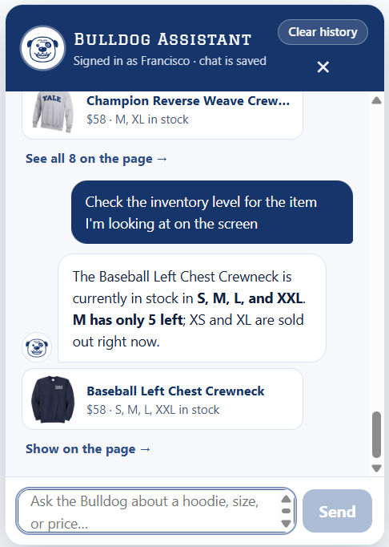
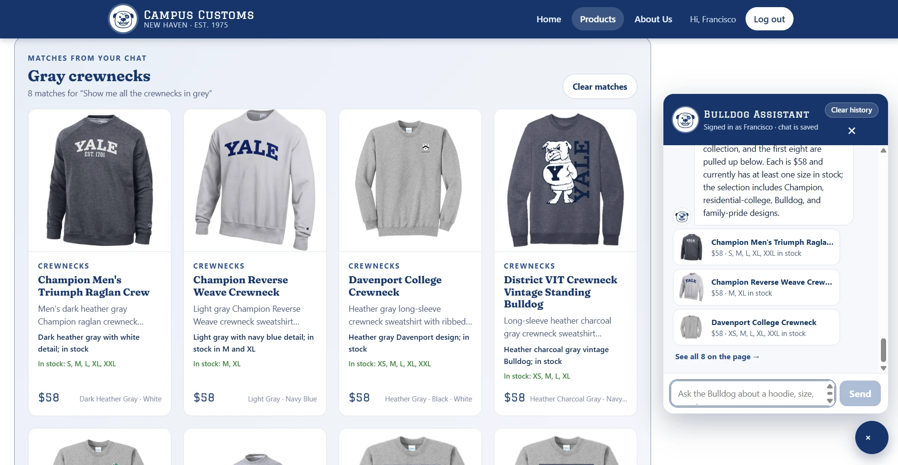
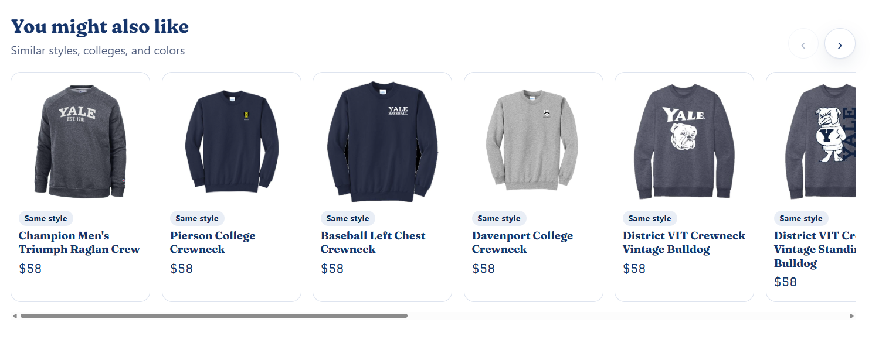
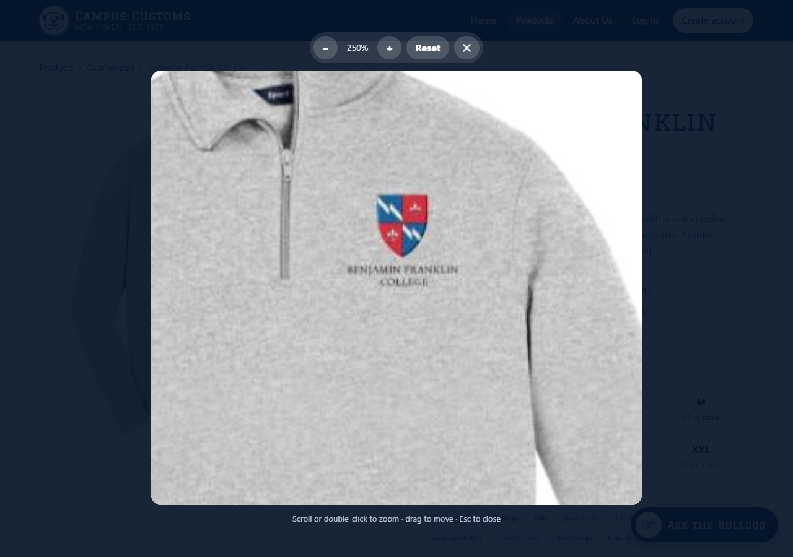
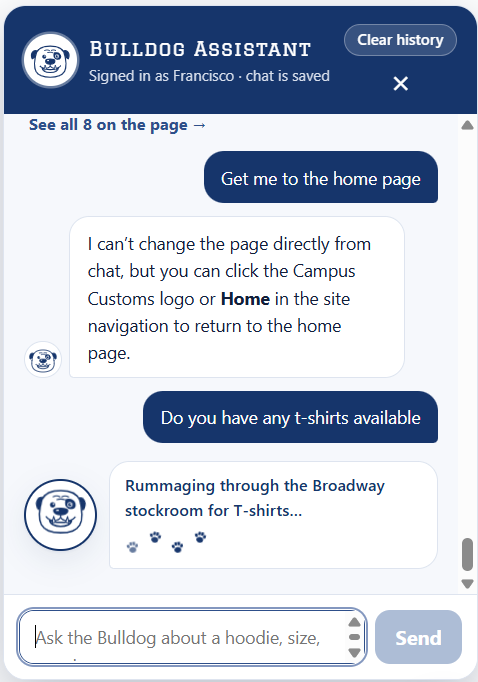
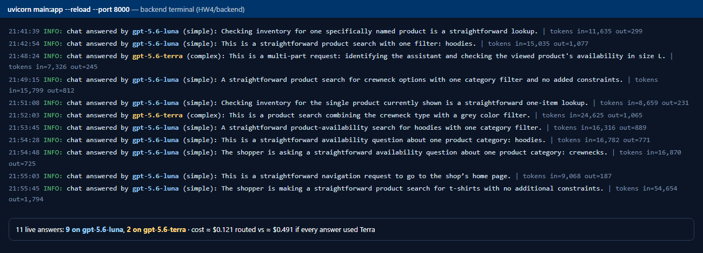

Check 1 · Chat checks the inventory level of an item
Pass
Check 2 · Dynamic search result cards after a category question
Pass
Check 3 · Problem 9 usability features
Pass On-model AI photos not generated (see note)3a · "You might also like" carousel of related products

3b · Photo zoom

Note: the AI "model wearing the product" photos were not generated, because the course Portkey key only serves chat models. The gallery shows an "On model" photo automatically once data/on_model/<product_id>.jpg exists; the prompt and the 61-product list are in imagegen/.
3c · Fun "thinking" messages instead of three dots

3d · Cost routing between Terra and a cheaper model

| Model | Price per 1M tokens (input / output) | Answers |
|---|---|---|
| gpt-5.6-luna (simple) | $0.20 / $1.20 | 9 |
| gpt-5.6-terra (complex) | $2.00 / $12.00 | 2 |
Prices: OpenAI API pricing. The log screenshot is rendered from the backend's agent_runs table and uvicorn log lines, with the same timestamps and token counts.
Screenshots 01–04 were taken by Francisco on the live site. Screenshot 07 was rendered by Claude from the live backend log, and 08 was captured from the same running site with headless Microsoft Edge.